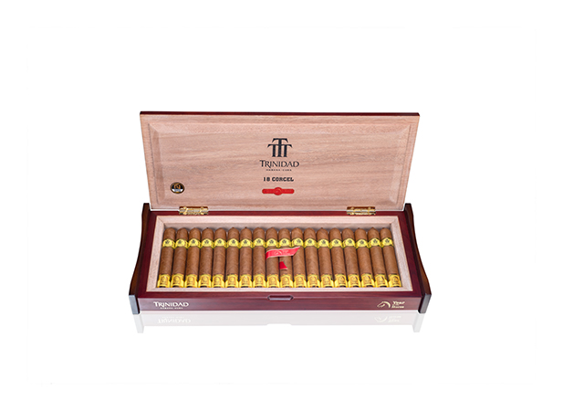

トリニダード初の旧正月（春節）記念作「コルセル」が、1月29日に香港で開かれたイベントで世界初披露されました。ハバノスS.A.の公式発表によると、会場には180人を超える参加者が集まりました。
コルセルはパトリシオス型（55×135mm）で、2026年の干支である午年（馬）にちなんだ限定作です。トリニダードが春節記念のビトラを出すのは初めてとなります。
今後は各国市場へ順次展開される予定です。

写真：Habanos S.A. — 春節記念「コルセル」の箱
トリニダード初の旧正月（春節）記念作「コルセル」が、1月29日に香港で開かれたイベントで世界初披露されました。ハバノスS.A.の公式発表によると、会場には180人を超える参加者が集まりました。
コルセルはパトリシオス型（55×135mm）で、2026年の干支である午年（馬）にちなんだ限定作です。トリニダードが春節記念のビトラを出すのは初めてとなります。
今後は各国市場へ順次展開される予定です。